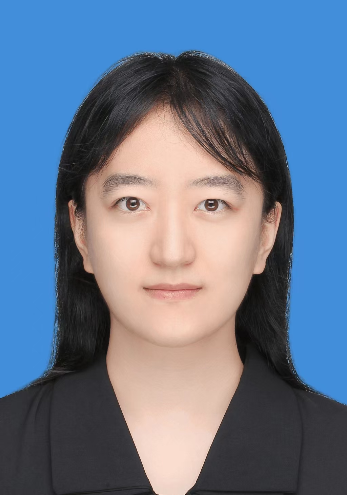

研究方向
中药药效物质筛选研究
个人简介
一直在探寻人生价值的路上。希望中药被更多人了解，期盼以自身微薄之力传承中医药文化。
毕业去向
就职于山东省内本科院校，担任专职教师。
研究、任职与荣誉
研究：硕士期间，利用荧光传感技术筛选中药注射液抗病毒效应物质。
任职：毕业后就职于山东省内本科院校，担任专职教师，目前从事中药类专业课程教学。
荣誉：硕士期间多次获得校级学业奖学金，并获院级优秀学生党员称号。

中药药效物质筛选研究
一直在探寻人生价值的路上。希望中药被更多人了解，期盼以自身微薄之力传承中医药文化。
就职于山东省内本科院校，担任专职教师。
研究：硕士期间，利用荧光传感技术筛选中药注射液抗病毒效应物质。
任职：毕业后就职于山东省内本科院校，担任专职教师，目前从事中药类专业课程教学。
荣誉：硕士期间多次获得校级学业奖学金，并获院级优秀学生党员称号。